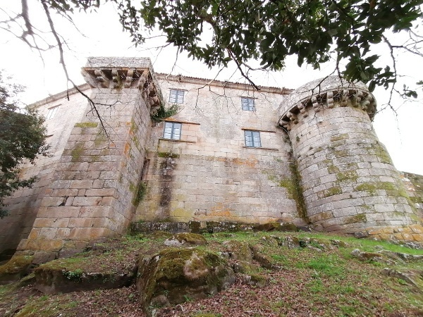
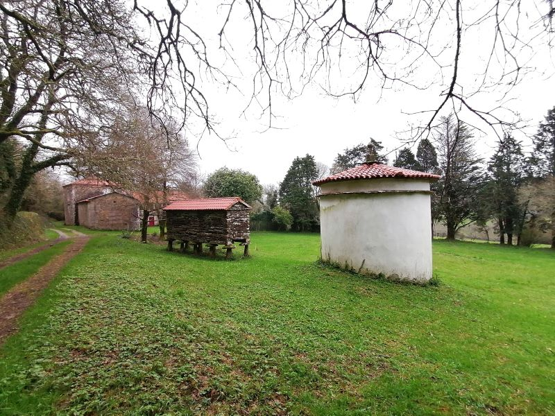
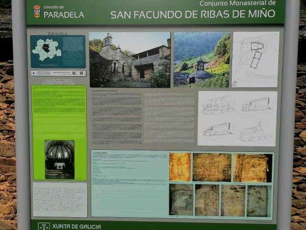

1. Reto
") Na fase 1 descríbese a situación e o reto a acadar, neste caso deseñar un panel descritivo dun monumento importante da zona.
Na fase 1 descríbese a situación e o reto a acadar, neste caso deseñar un panel descritivo dun monumento importante da zona.
Trátase dun traballo a realizar en grupo, utilizando un soporte analóxico ou dixital que permita a incorporación de imaxes e textos, como a ferramenta de notas de GeoGebra.
2. Conexión
A Fase 2 explora os coñecementos previos necesarios para acadar o reto, neste caso conceptos básicos de xeometría contextualizados en situacións e monumentos locais, feiras medievais, pazos e castelos galegos.
3: Exploración
A Fase 3 conecta o reto coas experiencias persoais dos/as estudantes.
Aquí introdúcense e póñense en práctica novos coñecementos e procedementos, cuxa base son os pazos galegos e as súas estruturas anexas, hórreos, pombais, xardíns e tamén igrexas e fortificacións, entre outros elementos arquitectónicos (escudos, muíños...).
4: Reto Final
A fase 4 do REA céntrase na realización do reto.
Escóllese neste caso, o formato do panel e os seus elementos, e inclúe exemplos e unha lista de verificación para revisar que cumpre os requisitos solicitados.
Tamén pode facerse un presuposto do coste do panel.
5.Conclusións
A Fase 5 propón rúbricas de avaliación, coavaliación e reflexión, tanto do reto (o panel), como do proceso desenvolvido para conseguilo. Os ítems a avaliar son unha adaptación dos propostos polo CEDEC para avaliar unha infografía:

- o patrón organizativo
- o deseño
- o contido en canto a elementos obrigatorios
- o contido xeométrico
- os elementos visuais
- corrección lingüística
- accesibilidade.